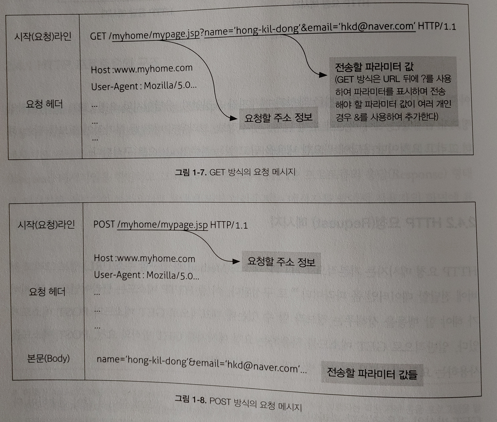

HTTP 프로토콜(HyperText Transfer Protocol)
🎬 HTTP 프로토콜이란?
- 실제 사용자와 연결된 최상위 계층의 프로토콜로 가장 대표적인 웹브라우저의 통신에 관한 프로토콜
🔸 프로토콜(Protocol)
- 네트워크상에서 데이터를 주고 받는 규칙
- 컴퓨터 상호간의 대화에 필요한 통신 규약
1. HTTP 프로토콜의 구조
요청(Request)과응답(Response)형태로 이루어졌다.- 사용자가 웹 페이지의 링크를 클릭하면 브라우저는
HTTP프로토콜의 요청 형태로HTTP메시지를 작성하여 웹 서버에 전송한다. - 웹 서버에서는 지금 받은
HTTP메시지가요청(Request)메시지임을 판단하고 그 데이터를 분석해서HTTP프로토콜의응답(Response)형태로 메시지를 작성하여 브라우저로 보내게 되면 브라우저는 메시지를 받아서 사용자의 화면에 표시하게 된다.

- 각
HTTP메시지는 지금 작성 된 메시지가 요청인지, 응답인지와 요청 URL 등 기본적인 정보가 담겨있는 시작 라인과 수행 날짜, 서버 정보, 브라우저 버전 등 부가적인 정보를 담는 헤더 그리고 요청이나 응답에 필요한 내용을 담고 있는 본문(Body)으로 구성된다.
2. HTTP 요청(Request) 메시지
- 기본적으로
HTTP 메소드(Method)와 접근할 주소(URL) 정보 그리고 서버에 전달할 데이터인폼 파라미터로 구성된다. HTTP 메소드(Method)는 클라이언트가 웹 서버가 해야 할 행동을 정해주는 정보로GET 메소드와POST 메소드가 있다.GET 메소드를 사용하는 요청 메시지를GET 방식의 요청,POST 메소드를 사용하는 요청 메시지를POST 방식의 요청이라고 한다.
🔸 GET 방식
- 전송할 파라미터 값들을 시작 라인의 URL 정보에 붙여서 같이 전송한다.
- 파라미터의 길이는 256바이트를 넘을 수 없다.
- 본문(Body)이 필요없기 때문에 전송 속도가
POST방식에 비해 빠르다. - 전송해야 할 데이터가 적을 때 유용하다.
- 파라미터가 URL뒤에 붙어서 전송되므로 사용자가 브라우저의 주소 창에서 전송되는 파라미터를 실제로 확인할 수 있다.
🔸 POST 방식
- 전송할 파라미터 값들을 요청 메시지 본문(Body)에 담아서 전송한다.
- 따라서 전송할 수 있는 데이터의 양에 제한이 없으며 주소창에서 전송되는 파라미터 확인이 불가능하다.
GET방식에 비해 보안상 더 유용하다.

3. HTTP 응답(Response) 메시지
- 요쳥에 대한 서버의 처리 성공 여부를 표시하는 상태 코드(HTTP 404, 500 등) 번호와 웹 서버가 응답해주는 콘텐츠의 타입 정보(텍스트/HTML, 이미지 등), 콘텐츠의 내용으로 구성된다.
- 실제적으로
서블릿클래스가 요청을 처리해 생성하는 페이지는 웹 서버에서 응답 메시지의 형태로 작성되어 사용자의 브라우저에 전송된다.